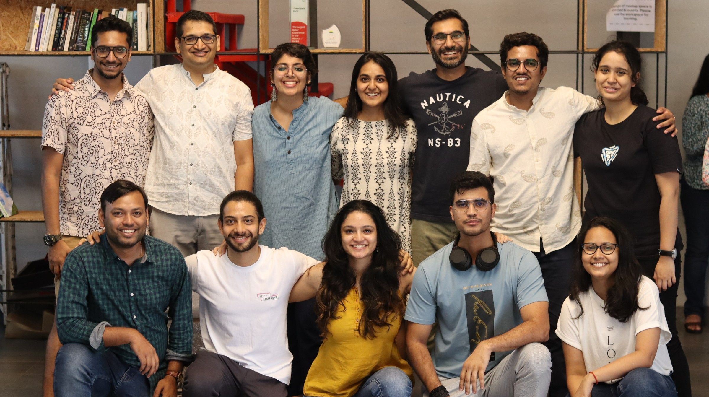
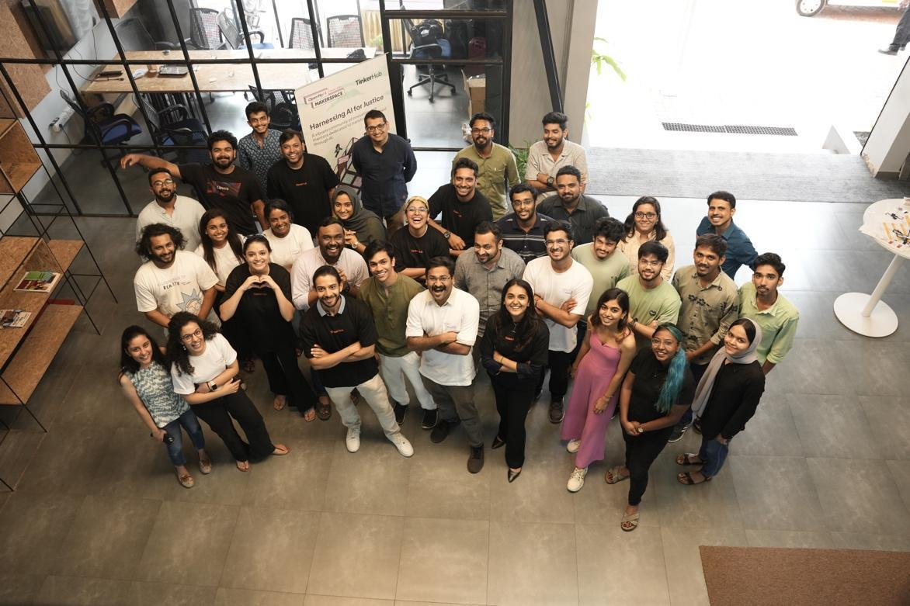
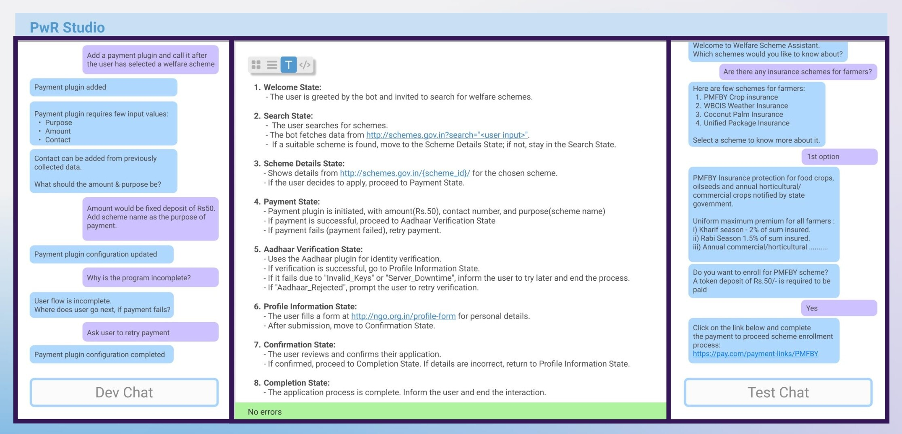
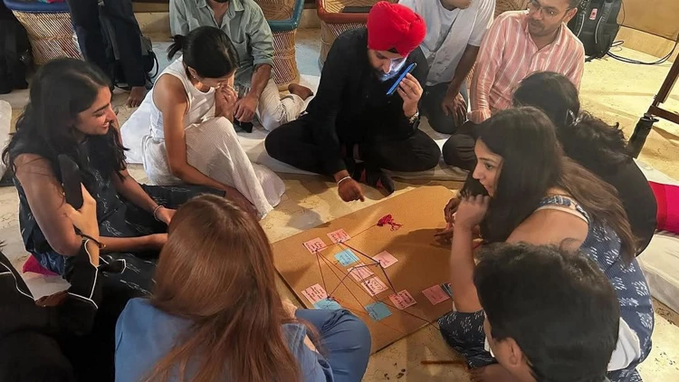
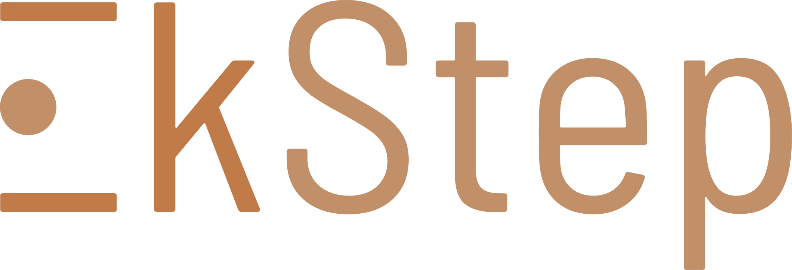
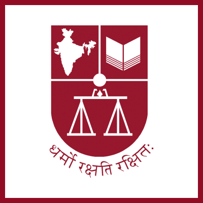
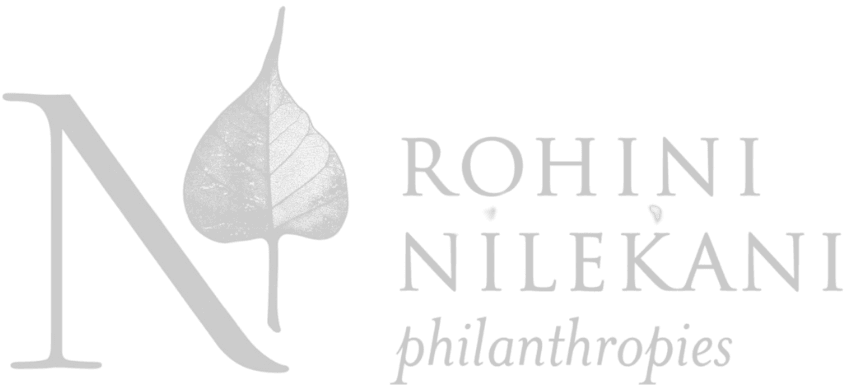

The OpenNyAI mission begins
Agami, EkStep Foundation, NLSIU, Thoughtworks and Rohini Nilekani Philanthropies came together around a shared question: how can open AI expand access to justice in India?
Read the community historyOpenNyAI brings communities and AI together so more people can understand, navigate and shape the systems that affect their lives.
Follow the journey
OpenNyAI has grown through shared experiments, open infrastructure and people willing to build together. This is the path from an idea in 2021 to a new rhythm of problem-led sprints in 2026.
Agami, EkStep Foundation, NLSIU, Thoughtworks and Rohini Nilekani Philanthropies came together around a shared question: how can open AI expand access to justice in India?
Read the community historyTeams began developing open models for Indian legal text, including named entity recognition, rhetorical role labelling and judgment summarisation. The work created reusable foundations for later tools and research.
Explore the early workAn eight-week online challenge brought engineers, lawyers, designers and entrepreneurs together to build practical AI applications for legal services and access to justice.
See how the community buildsStudent volunteers, CivicDataLab and legal research partners assembled a structured public dataset about High Court judges. It showed what becomes possible when careful civic data work is shared.
The community introduced an open conversational AI stack that could connect large language models, Indian languages and familiar channels such as WhatsApp to public information and services.
See Jugalbandi in useMore than 30 innovators worked alongside mentors for five focused days, moving from stubborn justice problems to working prototypes.

The Judges' Intelligent Virtual Assistant prototype explored how legal professionals could reach relevant acts, provisions and authorities more quickly.
A low-code environment made it easier for domain experts and citizen developers to turn natural-language ideas into deployable AI services.

Aalap, an instruction-tuned language model for Indian legal and paralegal work, gave the open community another foundation to test and improve.
The community began building Indian legal question sets and evaluation methods for retrieval-augmented generation, making quality visible rather than assumed.
Builders focused on digital public goods for grievance redressal, paralegal capacity and environmental justice, with the ecosystem around each tool treated as part of the design.
Explore the collaborative modelAround 60 changemakers, including government actors and members of the justice ecosystem, met in New Delhi to explore how public grievance systems could become more responsive, inclusive and trusted.

Community members, paralegals and citizens started shaping an open benchmark for AI answers to Indian legal queries, grounded in what a genuinely useful response should contain.
Explore MISAALThe mission moves into a repeating sprint model: rally around a stuck justice problem, build in public, test with the people closest to it and share what works. The first circuit is the Big Bail Bash.
Agami helps people move from seeking justice to making it. It discovers justice innovators, connects networks around shared challenges and helps build open public goods that others can adapt.
Explore AgamiWe built OpenNyAI with




A small core team holds the space for a much larger community to meet, make and share.